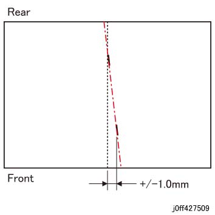
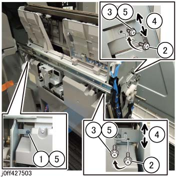

ADJ 27.27.1 Vertical Slant 调整 的 小册子 Stapler 单元 
目的
To 调整 前面 of 小册子 Stapler 单元 upwards or downwards 当...时 the extension line 该 connects the 装订针 is slanted 和 不 平行于 折叠 line 在...期间 小册子 装订针.
[检查]
Defect sample (图 1)

(图 1) ff427509
调整
请参阅 the 小册子 传输 组件 (REP 27.25.1) to 拉动 小册子 传输 组件 出 到 维修 位置.
拆卸前盖板. (PL 27.26)
调整 前面/后面 of 小册子 Stapler 单元 upwards or downwards. (图 2)
松开螺钉 该 secures the 小册子 Stapler 单元.
拆卸螺钉（x2）.
Reposition 和 loosely affix the 螺钉（x2） 到 大 直径 hole 和 the 长 hole respectively.
调整 小册子 Stapler 单元 upwards or downwards.
固定 the 螺钉（x3）.
输出 a 测试 打印 和 调整 直到 the 装订针 是 at 指定值.

(图 2) ff427503